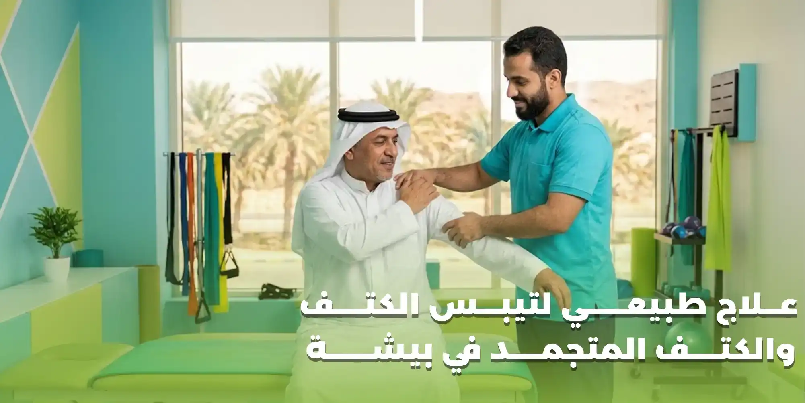

يُعد تيبس الكتف والكتف المتجمد من المشكلات التي قد تؤثر بصورة واضحة على حركة الذراع والقدرة على أداء الأنشطة اليومية، مثل ارتداء الملابس، وتمشيط الشعر، والوصول إلى الأشياء الموجودة في الأماكن المرتفعة، ورفع الذراع، والنوم بصورة مريحة. وقد تبدأ المشكلة بألم تدريجي في الكتف، ثم تتطور إلى صعوبة متزايدة في تحريك الذراع، حتى تصبح بعض الحركات البسيطة أكثر صعوبة من المعتاد.
ويبحث كثير من الأشخاص عن علاج طبيعي لتيبس الكتف والكتف المتجمد في بيشة بهدف تخفيف الألم واستعادة الحركة وتحسين القدرة على استخدام الذراع بصورة طبيعية قدر الإمكان. ويُعد العلاج الطبيعي والتأهيل الحركي من الخيارات المهمة في التعامل مع الكتف المتجمد، حيث يمكن أن يشمل البرنامج تمارين الحركة والتمدد المناسبة، وتحسين الوظيفة، وتقوية العضلات عندما تسمح حالة الكتف بذلك.
لكن من المهم معرفة أن تيبس الكتف ليس تشخيصًا واحدًا في جميع الحالات؛ فقد ينتج عن الكتف المتجمد، أو إصابات الأوتار، أو التهاب المفاصل، أو قلة الحركة بعد إصابة أو عملية جراحية. ولذلك فإن تحديد السبب الصحيح يساعد على اختيار العلاج المناسب وتجنب التمارين التي قد تزيد الأعراض.
في هنا التفاؤل للعلاج الطبيعي والتأهيل الطبي في بيشة، يمكن الاستفسار عن خدمات العلاج الطبيعي والتأهيل الحركي المناسبة لحالات آلام المفاصل ومحدودية الحركة.
ما هو تيبس الكتف والكتف المتجمد؟
تيبس الكتف هو انخفاض قدرة مفصل الكتف على الحركة بصورة طبيعية، وقد يظهر في صورة صعوبة في رفع الذراع أو تحريكها للخلف أو تدويرها أو الوصول بها إلى بعض المواضع.
أما الكتف المتجمد (Frozen Shoulder)، المعروف طبيًا باسم التهاب المحفظة اللاصق (Adhesive Capsulitis)، فهو حالة تحدث عندما تلتهب المحفظة التي تحيط بمفصل الكتف، ثم تصبح أكثر سماكة وشدًا، مما يؤدي إلى الشعور بالألم وتقييد حركة المفصل تدريجيًا.
ويتميز الكتف المتجمد عادة بوجود ألم وتيبس يؤثران على الحركة النشطة، أي الحركة التي يقوم بها المريض بنفسه، وكذلك الحركة السلبية التي يحاول فيها شخص آخر أو الفاحص تحريك الذراع برفق.
ولا تعني كل حالة تيبس في الكتف أن الشخص يعاني من الكتف المتجمد؛ فقد تكون هناك مشكلة أخرى، مثل إصابة في أوتار الكفة المدورة أو التهاب المفاصل أو إصابة سابقة. ولهذا يعتمد التشخيص على التاريخ الصحي والفحص السريري، وقد تُطلب فحوص تصويرية إذا احتاج الطبيب إلى استبعاد أسباب أخرى.
وفقًا لخدمة الصحة الوطنية البريطانية، يتميز الكتف المتجمد بألم وتيبس قد يستمران لأشهر، وقد تستغرق استعادة الحركة وقتًا طويلًا. (المصدر: NHS – Frozen Shoulder)
الفرق بين تيبس الكتف والكتف المتجمد
من المهم التمييز بين المصطلحين، لأن تيبس الكتف قد يكون عرضًا ناتجًا عن أسباب مختلفة، بينما الكتف المتجمد حالة محددة لها خصائص معروفة.
| وجه المقارنة | تيبس الكتف عمومًا | الكتف المتجمد |
|---|---|---|
| المعنى | انخفاض حركة الكتف لأي سبب | حالة تؤثر على محفظة مفصل الكتف |
| الأسباب | متعددة، مثل الإصابة أو الالتهاب أو قلة الحركة | التهاب وتغيرات في محفظة المفصل |
| تطور الأعراض | يعتمد على السبب | غالبًا يتطور تدريجيًا |
| الألم | قد يكون موجودًا أو محدودًا حسب السبب | غالبًا يصاحبه ألم وتقييد واضح للحركة |
| العلاج | يحدد وفق السبب | قد يشمل التمارين العلاجية وإدارة الألم وخيارات طبية أخرى حسب الحالة |
قد يكون تيبس الكتف بعد إصابة أو جراحة مرتبطًا بسبب مختلف عن الكتف المتجمد، لذلك لا يُنصح باستخدام برنامج علاجي واحد لجميع حالات محدودية الحركة.
أسباب تيبس الكتف والكتف المتجمد
قد يحدث تيبس الكتف نتيجة مجموعة من العوامل، بعضها يرتبط بالكتف نفسه، وبعضها يرتبط بالحالة الصحية العامة أو بقلة الحركة.
1. التهاب محفظة مفصل الكتف
في حالات الكتف المتجمد، تتأثر المحفظة المحيطة بالمفصل، وقد تصبح أكثر سماكة وأقل مرونة، مما يحد من الحركة ويسبب الألم. ولا يكون السبب واضحًا دائمًا، وقد تظهر الحالة تدريجيًا دون إصابة محددة يمكن ربطها ببداية الأعراض.
2. قلة حركة الكتف لفترة طويلة
قد يؤدي إبقاء الذراع دون حركة لفترة طويلة بعد إصابة أو جراحة إلى زيادة خطر التيبس. ولهذا السبب، من المهم اتباع تعليمات الطبيب بشأن الحركة المناسبة بعد الإصابات والعمليات، دون تحريك الكتف بصورة تخالف القيود الطبية.
3. الإصابات السابقة
قد تؤدي بعض إصابات الكتف إلى الألم وتقليل استخدام الذراع، مما قد يسهم في تطور التيبس لدى بعض الأشخاص. لكن استمرار الألم بعد الإصابة قد يكون ناتجًا أيضًا عن إصابة في الأوتار أو الأربطة أو العظام، لذلك يجب تحديد السبب قبل البدء في تمارين التأهيل.
4. العمليات الجراحية
قد يحتاج المريض بعد بعض عمليات الكتف أو العمليات التي تؤثر على استخدام الذراع إلى برنامج تأهيلي محدد. وقد تؤدي قلة الحركة خلال فترة التعافي إلى انخفاض مدى الحركة، لكن توقيت بدء التمارين ونوعها يعتمدان على العملية وتعليمات الجراح.
5. مرض السكري
تزداد احتمالية الإصابة بالكتف المتجمد لدى الأشخاص المصابين بالسكري، وقد تكون الحالة أكثر تعقيدًا لدى بعضهم. لذلك من المهم إبلاغ الطبيب وأخصائي العلاج الطبيعي بوجود السكري، ومتابعة الحالة الصحية إلى جانب التعامل مع أعراض الكتف.
6. اضطرابات الغدة الدرقية
تشير الأدلة الطبية إلى ارتباط بعض اضطرابات الغدة الدرقية بزيادة احتمال الإصابة بالكتف المتجمد. ولا يعني وجود اضطراب في الغدة أن الكتف المتجمد سيحدث حتمًا، لكنه من العوامل التي ينبغي مراعاتها عند تقييم الحالة.
7. التقدم في العمر
تظهر حالات الكتف المتجمد بصورة شائعة لدى البالغين في منتصف العمر وما بعده، لكن العمر وحده لا يكفي لتحديد سبب الألم أو التيبس.
8. ارتفاع الدهون في الدم وبعض العوامل الصحية
تشير إرشادات سريرية منشورة عام 2025 إلى ارتباط السكري واضطرابات الغدة الدرقية وارتفاع الدهون في الدم بزيادة خطر الكتف المتجمد. ومع ذلك، فإن وجود أي من هذه العوامل لا يؤكد التشخيص، ولا يغني عن الفحص السريري.
أعراض الكتف المتجمد التي تستدعي الانتباه
تختلف الأعراض من شخص لآخر، وقد تبدأ خفيفة ثم تتزايد تدريجيًا.
ومن أبرز الأعراض:
- ألم في الكتف يزداد مع بعض الحركات.
- صعوبة رفع الذراع إلى أعلى.
- محدودية القدرة على تحريك الذراع للخلف.
- صعوبة تدوير الذراع إلى الخارج.
- صعوبة ارتداء الملابس أو خلعها.
- صعوبة تمشيط الشعر أو الوصول إلى الرأس.
- ألم عند محاولة الوصول إلى رف مرتفع.
- صعوبة الوصول باليد إلى الظهر.
- اضطراب النوم بسبب ألم الكتف.
- تيبس واضح بعد فترات الراحة.
- الاعتماد على الذراع الأخرى لأداء المهام اليومية.
- انخفاض القدرة على أداء بعض الأعمال المنزلية أو الوظيفية.
تنبيه:
وقد يكون الألم أكثر وضوحًا في الليل أو عند الاستلقاء على الجانب المصاب. أما إذا ظهرت الأعراض فجأة بعد إصابة قوية، أو كان الألم شديدًا جدًا، فلا ينبغي افتراض أن السبب هو الكتف المتجمد دون تقييم طبي.
مراحل تطور الكتف المتجمد
يمر الكتف المتجمد غالبًا بثلاث مراحل، لكن مدتها وشدتها تختلفان من شخص إلى آخر، وقد تتداخل الأعراض بين مرحلة وأخرى.
المرحلة الأولى: مرحلة الألم المتزايد
تُعرف أحيانًا بمرحلة التجمد أو المرحلة المؤلمة، وقد يلاحظ الشخص زيادة الألم تدريجيًا، مع بدء انخفاض مدى حركة الكتف. في هذه المرحلة قد يصبح النوم على الكتف المصاب مزعجًا، وقد تؤدي بعض الحركات اليومية إلى زيادة الألم.
الهدف العلاجي: التعامل مع الألم، والمحافظة على الحركة المناسبة، وتجنب الحركات العنيفة أو التمدد القوي الذي يزيد الأعراض.
المرحلة الثانية: مرحلة التيبس الواضح
في هذه المرحلة قد يصبح التيبس أكثر تأثيرًا على الحركة اليومية، ويواجه المريض صعوبة في رفع الذراع أو تدويرها أو الوصول بها إلى بعض المواضع. وقد يقل الألم لدى بعض الأشخاص مقارنة بالمرحلة الأولى، لكن محدودية الحركة قد تستمر بصورة واضحة.
الهدف العلاجي: العمل على تحسين مدى الحركة تدريجيًا، واختيار تمارين تتناسب مع درجة التيبس ومدى تحمل الكتف.
المرحلة الثالثة: مرحلة التحسن التدريجي
قد تبدأ الحركة في التحسن تدريجيًا، ويصبح المريض قادرًا على أداء بعض الأنشطة التي كانت صعبة سابقًا. لكن استعادة الحركة قد تستغرق وقتًا طويلًا، وقد لا تعود بصورة كاملة لدى جميع المرضى.
الهدف العلاجي: مواصلة العمل على الحركة والوظيفة والقوة بحسب استجابة الكتف، مع التدرج في العودة إلى الأنشطة اليومية.
قد تستمر حالة الكتف المتجمد لأشهر، وأحيانًا سنوات، ولذلك من المهم وضع أهداف واقعية ومتابعة تطور الأعراض بدلًا من توقع الشفاء السريع لدى جميع الحالات. (المصدر: NHS – Frozen Shoulder)
كيف يتم تشخيص الكتف المتجمد؟
يعتمد تشخيص الكتف المتجمد أساسًا على معرفة التاريخ الصحي للمريض والفحص السريري.
معرفة بداية الألم وتطور الأعراض
يساعد تحديد وقت بدء الألم، وطريقة تطوره، والحركات التي تزيده، ووجود إصابة سابقة أو عملية جراحية، على فهم طبيعة المشكلة.
تقييم مدى حركة الكتف
يتم تقييم حركة الذراع في اتجاهات مختلفة، مثل الرفع إلى الأمام والجانب، والدوران الداخلي والخارجي. وقد تكون محدودية الحركة في أكثر من اتجاه من العلامات المهمة التي تساعد الطبيب على التمييز بين الكتف المتجمد وبعض مشكلات الكتف الأخرى.
تقييم القوة العضلية
قد يساعد تقييم القوة على تحديد ما إذا كانت هناك مشكلة عضلية مصاحبة، لكن الألم نفسه قد يؤثر على قدرة المريض على أداء بعض الاختبارات.
مراجعة الحالات الصحية المصاحبة
من المهم معرفة ما إذا كان المريض يعاني من السكري أو اضطرابات الغدة الدرقية أو أي حالة أخرى قد تؤثر على التقييم أو خطة العلاج.
الأشعة والفحوصات عند الحاجة
لا يحتاج كل مريض إلى تصوير بالرنين المغناطيسي أو الموجات فوق الصوتية لتأكيد الكتف المتجمد. وقد يطلب الطبيب الأشعة أو فحوصًا أخرى عند الحاجة لاستبعاد أسباب بديلة، مثل بعض مشكلات المفصل أو الأوتار.
وتوضح الإرشادات السريرية الحديثة أن التصوير يُستخدم كعامل مساعد عند الحاجة، ولا ينبغي الاعتماد عليه وحده لتشخيص الكتف المتجمد دون التاريخ الصحي والفحص السريري.
علاج طبيعي لتيبس الكتف والكتف المتجمد في بيشة
يهدف العلاج الطبيعي إلى تخفيف الألم وتحسين الحركة والقدرة على استخدام الذراع في الأنشطة اليومية، مع مراعاة مرحلة الحالة وشدة الأعراض.
ولا يعتمد العلاج على إجبار الكتف على الحركة أو استخدام تمارين شديدة منذ البداية، بل على اختيار التدخل المناسب وفق التقييم.
أولًا: تحسين مدى حركة الكتف
تساعد تمارين الحركة والتمدد المناسبة على العمل تدريجيًا نحو تحسين حركة المفصل. ويحدد الأخصائي اتجاهات الحركة التي تحتاج إلى اهتمام، ودرجة التمدد المناسبة، وطريقة أداء التمرين دون زيادة غير ضرورية في الألم.
ثانيًا: تخفيف الألم المصاحب للحركة
قد يتضمن البرنامج إرشادات حول تعديل الأنشطة اليومية، واختيار أوضاع أكثر راحة، وتجنب الحركات التي تزيد الأعراض بصورة واضحة. وقد تُستخدم بعض الوسائل العلاجية المساعدة بحسب الحالة والتقييم السريري، لكن لا ينبغي اعتبار أي وسيلة منفردة علاجًا مضمونًا للكتف المتجمد.
ثالثًا: تحسين الوظيفة اليومية
لا يقتصر الهدف على زيادة مدى الحركة في أثناء الفحص، بل يشمل أيضًا تحسين القدرة على ارتداء الملابس، والوصول إلى الأشياء، والعناية الشخصية، وأداء المهام اليومية.
رابعًا: تقوية العضلات عند ملاءمة الحالة
قد تدخل تمارين تقوية عضلات الكتف ضمن الخطة عندما تسمح شدة الألم ومدى الحركة بذلك. ويتم اختيار شدة التمرين ومقاومته وفق تقييم الأخصائي، بدلًا من البدء بتمارين مقاومة قوية قد لا تكون مناسبة للمرحلة الحالية.
خامسًا: التدرج في العودة إلى الأنشطة
يساعد تنظيم الأنشطة وزيادة الحركة تدريجيًا على دعم التعافي الوظيفي، مع تجنب إجهاد الكتف أو إيقاف الحركة تمامًا لفترات طويلة دون توجيه طبي.
وتشير الإرشادات السريرية المنشورة عام 2025 إلى أن بعض التدخلات غير الجراحية، بما فيها التمارين والعلاج اليدوي المناسب، قد تساعد على تحسين الألم ووظيفة الطرف العلوي ومدى حركة الكتف، مع ضرورة تكييف العلاج حسب الحالة.
تمارين العلاج الطبيعي للكتف المتجمد
تُعد التمارين جزءًا مهمًا من التعامل مع الكتف المتجمد، لكن التمارين المناسبة تختلف باختلاف شدة الألم ومرحلة الحالة ومدى الحركة المتاح.
وفيما يلي أمثلة على أنواع التمارين التي قد يختار الأخصائي بعضها ضمن برنامج التأهيل، وليست وصفة موحدة لجميع المرضى.
تمارين الحركة اللطيفة
قد تتضمن تحريك الكتف ضمن مدى مريح، بهدف المحافظة على الحركة المتاحة وتجنب الجمود الكامل. ويجب عدم إجبار الذراع على الوصول إلى مدى يسبب ألمًا شديدًا.
تمارين المساعدة بالذراع الأخرى
في بعض الحالات، قد تُستخدم الذراع السليمة للمساعدة على تحريك الذراع المصابة ضمن مدى مناسب، بشرط أن تكون الحركة ملائمة للحالة وأن يتعلم المريض الطريقة الصحيحة.
تمارين تحسين الدوران
قد يركز البرنامج على تحسين الدوران الداخلي أو الخارجي للكتف عندما تكون هذه الحركات محدودة، مع تحديد اتجاه التمرين وشدته وفق التقييم.
تمارين الحركة الوظيفية
قد يتضمن التأهيل تدريبات مرتبطة بالحركات اليومية، مثل الوصول إلى مستوى مناسب أمام الجسم أو تحسين القدرة على ارتداء الملابس.
تمارين تقوية العضلات
قد تُضاف تمارين التقوية في مرحلة مناسبة من التأهيل، بهدف دعم وظيفة الكتف وتحسين القدرة على استخدام الذراع.
تنبيه مهم:
لا يُنصح بممارسة التمدد القوي أو استخدام الأوزان أو أجهزة المقاومة لمحاولة فك تيبس الكتف دون تقييم مناسب. إذا كان الألم شديدًا أو ازداد بوضوح مع التمرين، فيجب إيقاف الحركة المؤلمة ومراجعة المختص لتعديل البرنامج.
هل التمدد القوي يساعد على فك الكتف المتجمد؟
ليس بالضرورة.
فالضغط الشديد على المفصل أو محاولة إجبار الذراع على الحركة قد يؤديان إلى زيادة الألم وتهيج الأنسجة.
ويعتمد اختيار التمدد على المرحلة التي يمر بها المريض، وشدة الألم، ومدى الحركة المتاح.
في المراحل التي يكون فيها الألم شديدًا، قد يكون من الأنسب التركيز على الحركة اللطيفة وإدارة الأعراض. أما عند تحسن الألم، فقد يصبح من الممكن زيادة التمدد تدريجيًا وفق إرشادات الأخصائي.
الهدف ليس تحريك الكتف بالقوة، بل تحسين الحركة بصورة تدريجية يمكن تحملها.
دور العلاج اليدوي في تأهيل الكتف المتجمد
قد يستخدم أخصائي العلاج الطبيعي بعض تقنيات العلاج اليدوي للمساعدة على تحسين حركة الكتف والوظيفة، وقد تُدمج هذه التقنيات مع التمارين العلاجية عندما تكون مناسبة.
لكن العلاج اليدوي لا يُعد بديلًا عن برنامج التأهيل، ولا ينبغي تطبيقه بقوة على مفصل شديد الألم دون تقييم.
وتشير الإرشادات السريرية إلى أن العلاج اليدوي المصحوب بتمارين مدى الحركة قد يكون مفيدًا في تحسين وظيفة الطرف العلوي وحركة الكتف لدى بعض المصابين بالكتف المتجمد.
هل يمكن علاج الكتف المتجمد بدون جراحة؟
يمكن التعامل مع كثير من حالات الكتف المتجمد بوسائل غير جراحية، وقد تشمل التمارين العلاجية وإدارة الألم والعلاج الطبيعي وبعض الخيارات الطبية التي يحددها الطبيب حسب الحالة.
وقد يناقش الطبيب حقن الكورتيكوستيرويد داخل المفصل في بعض الحالات، خصوصًا عندما يكون الألم مؤثرًا على الحركة والوظيفة. وقد تُستخدم خيارات أخرى للحالات التي لا تستجيب بصورة مناسبة للعلاج الأولي.
أما الإجراءات التدخلية أو الجراحية فتُبحث في حالات مختارة وفق تقييم الطبيب، وشدة الأعراض، ومدى تأثيرها على الحياة اليومية، والاستجابة للعلاجات السابقة.
ولا يمكن ضمان أن العلاج الطبيعي وحده سيعالج جميع الحالات، كما لا يعني وجود الكتف المتجمد أن المريض يحتاج إلى جراحة مباشرة.
نصائح يومية للتعامل مع تيبس الكتف
يمكن لبعض التغييرات في الروتين اليومي أن تساعد على تقليل الانزعاج وتسهيل استخدام الذراع.
تجنب تثبيت الكتف تمامًا
إذا لم تكن هناك تعليمات طبية تمنع الحركة، فقد يؤدي عدم استخدام الكتف تمامًا إلى زيادة التيبس. ويُفضل الحفاظ على الحركة المناسبة وفق تعليمات الطبيب أو أخصائي العلاج الطبيعي.
تعديل طريقة النوم
قد يساعد اختيار وضعية نوم مريحة ودعم الذراع بوسادة على تقليل الانزعاج لدى بعض المرضى. ويُفضل تجنب الضغط المباشر على الكتف المؤلم إذا كان ذلك يزيد الأعراض.
توزيع الأنشطة اليومية
يمكن تقسيم المهام المنزلية إلى فترات قصيرة، وتجنب تكرار الحركات التي تزيد الألم لفترات طويلة.
تجنب رفع الأحمال الثقيلة
قد تزيد الأحمال الثقيلة أو الحركات المفاجئة من الأعراض، خاصة عندما تكون الحركة محدودة والألم واضحًا.
الالتزام بالتمارين الموصوفة
يُفضل اتباع برنامج التمارين الذي يحدده المختص، بدلًا من تجربة حركات عشوائية أو زيادة شدة التمرين دون مراجعة.
استخدام الحرارة أو البرودة بحذر
قد تساعد الكمادات الدافئة أو الباردة بعض الأشخاص على تخفيف الانزعاج، لكن يجب لف الكمادة بمنشفة وتجنب وضعها مباشرة على الجلد، وعدم استخدامها على منطقة تعاني من ضعف الإحساس دون استشارة مختص.
كم تستغرق مدة علاج الكتف المتجمد؟
لا توجد مدة واحدة تنطبق على جميع الحالات.
فقد يستمر الكتف المتجمد لأشهر، وقد يحتاج بعض الأشخاص إلى فترة أطول لاستعادة الحركة والقدرة الوظيفية. وتتأثر المدة بعدة عوامل، منها:
- مرحلة الحالة عند بدء العلاج.
- شدة الألم.
- مقدار محدودية الحركة.
- وجود السكري أو حالات صحية أخرى.
- مدى الالتزام بالبرنامج المناسب.
- طبيعة الأنشطة اليومية.
- الاستجابة الفردية للعلاج.
ومن المهم عدم مقارنة تقدم المريض بتجربة شخص آخر؛ فقد يختلف مسار التعافي بشكل ملحوظ بين الأفراد.
متى تحتاج إلى مراجعة الطبيب بسبب تيبس الكتف؟
يُفضل الحصول على تقييم طبي إذا استمر الألم والتيبس أو أصبحا يؤثران على النوم والحركة والأنشطة اليومية.
كما يجب طلب تقييم عاجل عند وجود:
- ألم شديد مفاجئ بعد إصابة.
- عدم القدرة على تحريك الذراع.
- تغير واضح في شكل الكتف.
- تورم شديد.
- احمرار وسخونة مصحوبين بحمى.
تنبيه هام:
وإذا صاحب ألم الكتف ألم أو ضغط في الصدر أو ضيق في التنفس أو تعرق مفاجئ، فيجب طلب الإسعاف فورًا لاحتمال وجود سبب طبي طارئ لا يرتبط بالكتف نفسه.
علاج طبيعي للكتف المتجمد في بيشة لدى هنا التفاؤل
عند البحث عن علاج تيبس الكتف في بيشة، من المهم اختيار برنامج تأهيلي يراعي سبب المشكلة ومدى الحركة وشدة الألم والأهداف اليومية للمريض.
يقدم هنا التفاؤل للعلاج الطبيعي والتأهيل الطبي في بيشة خدمات العلاج الطبيعي والتأهيل الحركي ضمن مجالات متعددة، ويمكن التواصل مع المركز للاستفسار عن الخدمات المتاحة ومدى مناسبتها للحالة.
وقد يركز البرنامج التأهيلي، بحسب التقييم، على:
- • تقييم حركة الكتف وتحديد اتجاهات الحركة المحدودة ومدى تأثيرها على الأنشطة اليومية.
- • وضع أهداف واقعية مثل تحسين القدرة على رفع الذراع أو الوصول إلى الرأس أو ارتداء الملابس.
- • اختيار التمارين المناسبة: تحديد تمارين الحركة والتمدد والتقوية حسب مرحلة الحالة ومدى تحمل الكتف.
- • متابعة الاستجابة: مراجعة تطور الأعراض ومدى الحركة، وتعديل البرنامج عند الحاجة، أو إحالة المريض إلى الطبيب إذا ظهرت علامات تستدعي تقييمًا إضافيًا.
الأسئلة الشائعة عن علاج تيبس الكتف والكتف المتجمد في بيشة
هل العلاج الطبيعي مفيد للكتف المتجمد؟
يمكن أن يساعد العلاج الطبيعي على تحسين مدى حركة الكتف والوظيفة وتخفيف الأعراض لدى بعض المرضى. ويعتمد البرنامج على شدة الألم ومرحلة الحالة، وقد يحتاج المريض إلى علاجات طبية إضافية يحددها الطبيب.
هل يمكن علاج الكتف المتجمد بدون عملية؟
نعم، يمكن التعامل مع كثير من الحالات بوسائل غير جراحية، مثل العلاج الطبيعي والتمارين المناسبة وإدارة الألم. لكن الخيارات المناسبة تختلف حسب الحالة، وقد تحتاج بعض الحالات إلى تقييم طبي إضافي إذا استمرت الأعراض أو كانت شديدة.
ما الفرق بين تيبس الكتف والكتف المتجمد؟
تيبس الكتف هو وصف لمحدودية الحركة قد تنتج عن أسباب متعددة، أما الكتف المتجمد فهو حالة محددة ترتبط بالتهاب وتيبس محفظة مفصل الكتف، وتسبب ألمًا ومحدودية في الحركة.
هل تمارين الكتف المتجمد مؤلمة؟
قد يشعر المريض ببعض الانزعاج أثناء الحركة، لكن التمرين لا ينبغي أن يعتمد على إجبار الكتف على الحركة بالقوة. ويجب تعديل التمرين إذا سبب ألمًا شديدًا أو أدى إلى زيادة واضحة في الأعراض.
كم تستغرق مدة التعافي من الكتف المتجمد؟
قد تستغرق استعادة الحركة أشهرًا، وأحيانًا مدة أطول. وتعتمد المدة على شدة الحالة ومرحلتها والحالة الصحية العامة واستجابة المريض للعلاج.
هل مرض السكري يزيد احتمالية الإصابة بالكتف المتجمد؟
نعم، يرتبط مرض السكري بزيادة احتمالية الإصابة بالكتف المتجمد. لذلك من المهم إبلاغ الطبيب وأخصائي العلاج الطبيعي بوجود السكري عند تقييم الحالة ووضع البرنامج المناسب.
هل يمكن أن يحدث الكتف المتجمد بعد عملية جراحية؟
قد تظهر محدودية الحركة بعد بعض العمليات أو الإصابات، وقد يزيد عدم استخدام الذراع لفترة طويلة من خطر التيبس. لكن يجب التمييز بين التيبس الناتج عن التعافي بعد الجراحة والكتف المتجمد، مع الالتزام بتعليمات الجراح.
هل الأشعة ضرورية لتشخيص الكتف المتجمد؟
ليس بالضرورة في جميع الحالات. يعتمد التشخيص أساسًا على التاريخ الصحي والفحص السريري، وقد يطلب الطبيب الأشعة أو التصوير بالموجات فوق الصوتية أو الرنين المغناطيسي عند الحاجة لاستبعاد أسباب أخرى.
هل النوم على الكتف المصاب يزيد الألم؟
قد يؤدي الضغط على الكتف المصاب إلى زيادة الألم لدى بعض الأشخاص. ويمكن تجربة وضعية نوم مريحة ودعم الذراع بوسادة، مع تجنب الوضعيات التي تزيد الأعراض.
هل يمكن أن يعود الكتف المتجمد بعد التحسن؟
قد تستمر بعض محدودية الحركة لدى بعض المرضى، وقد تختلف احتمالات تكرار المشكلة بين الأفراد. وإذا عادت الأعراض أو ظهرت محدودية جديدة، فمن الأفضل تقييم السبب بدلًا من افتراض أن الحالة نفسها قد تكررت.
هل يمكن استخدام الأوزان لعلاج تيبس الكتف؟
ليس من المناسب البدء بالأوزان أو تمارين المقاومة القوية دون معرفة سبب التيبس ومرحلته. فقد تكون تمارين التقوية مناسبة في مرحلة معينة، لكن اختيارها وشدتها يجب أن يتوافقا مع تقييم الحالة.
متى يجب مراجعة الطبيب بسبب ألم الكتف؟
ينبغي مراجعة الطبيب إذا استمر الألم أو التيبس وأثرا على الحياة اليومية، أو إذا كانت حركة الذراع محدودة بشدة. أما الألم المفاجئ الشديد أو الألم المصحوب بتغير شكل الكتف أو أعراض خطيرة أخرى، فيستدعي تقييمًا عاجلًا.
هل يقدم هنا التفاؤل خدمات العلاج الطبيعي للكتف في بيشة؟
يقدم هنا التفاؤل للعلاج الطبيعي والتأهيل الطبي خدمات العلاج الطبيعي والتأهيل الحركي. ويمكن التواصل مع المركز عبر موقعه الرسمي للاستفسار عن الخدمات المتاحة ومدى مناسبتها للحالة.
احجز استشارتك في مركز هنا التفاؤل ببيشة
يُعد تيبس الكتف والكتف المتجمد من المشكلات التي قد تؤثر على حركة الذراع والقدرة على أداء المهام اليومية، وقد تتطور الأعراض تدريجيًا من الألم إلى محدودية واضحة في الحركة. إذا كنت تعاني من تيبس الكتف أو صعوبة رفع الذراع أو ألم يعيق النوم والحركة، فإن التقييم المتخصص يساعد على تحديد المسار المناسب للعلاج. وتذكر أن استعادة حركة الكتف قد تحتاج إلى وقت وصبر ومتابعة، وأن اختيار التمارين المناسبة والتدرج في تنفيذها أكثر أهمية من محاولة الوصول إلى الحركة الكاملة بسرعة.